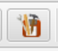
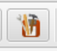

Projektdatei
Der Sinn einer Projektdatei
Wenn man in RunPNG eine Sequenz aus Einzelbildern oder eine komplette Animation lädt, dann bleiben die ursprünglichen Einzelbilder im Speicher stets unverändert. Wenn Änderungen stattfinden, geschieht das immer mit einer Kopie für die Darstellung. Auch diese Kopie gibt es nur einmal, um den Speicherbedarf nicht unnötig aufzublähen.
Egal wie viele Einzelschritte der Anwender bei seiner Arbeit vornimmt, sie lassen sich entweder mit der Funktion Rückgängig ungeschehen machen, oder der Anwender schaltet die betreffende Option einfach wieder aus.
Dieses Verhalten ist zwar schön und nützlich. Doch nachdem die APNG-Datei gespeichert und ein anderes Bild geladen wurde, sind alle Änderungen fix. Denn gespeichert wird nur das Resultat der Arbeit. Von den einzelnen Arbeitsschritten weiß die fertige Datei nichts.
An der Stelle kommt die Projektdatei ins Spiel. Die Projektdatei enthält die Einzelbilder und Effektbilder in ihrer ursprünglichen Form und alle Arbeitsschritte, die für die Bildentstehung relevant sind. Sie enthält jedoch nicht den Rückgängig-Speicher und auch keine gelöschten Einzelbilder.
Speichern einer Projektdatei
 
Eine Projektdatei zu speichern ist so einfach wie das Bild abzuspeichern. Dazu gibt es den Punkt Speichern als Projekt ... im Menü Datei oder die dazugehörige Schaltfläche in der Werkzeugleiste.
Das Projekt wird mit der Endung .rpz gespeichert. "rpz" steht für RunPNG Project Zipped. Was bereits etwas über die Natur der Datei aussagt. Es handelt sich hierbei nämlich um eine komprimierte ZIP-Datei, die sich ohne Weiteres mit WinZip, 7-Zip und ähnlichen Programmen öffnen ließe. Sie enthält die ursprünglichen Bilder im PNG-Format, sowie Metadaten im XML-Format für die Wiederherstellung der Arbeitsschritte.
Doch auch wenn wir hier das vertraute ZIP-Format vorfinden gilt: Nur gucken, nicht anfassen. Genauer gesagt, nichts verändern. Denn das könnte die Projektdatei unbrauchbar machen.